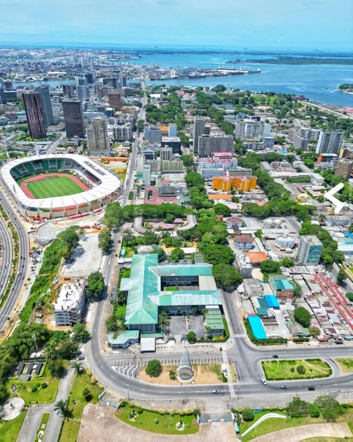

Guy Noam BOHUI
About Me
My name is Guy Noam BOHUI. I am a student at BYU-Pathway Worldwide, where I am developing my skills in web development and programming. I am interested in technology, software development, and continuous learning.
My Country: Côte d'Ivoire

Côte d'Ivoire is a country located in West Africa. Its economic capital is Abidjan, while Yamoussoukro is its political capital. The country is known for its cultural diversity, hospitality, cocoa production, and beautiful landscapes.